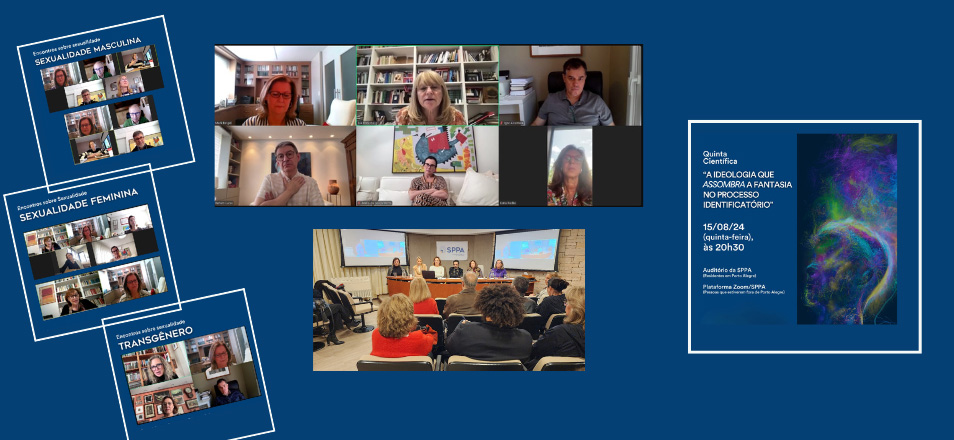

Destrutividade do homem sobre a natureza em pauta
foi um dos temas tratados na Diretoria Científica
- 
 Convidado alertou que a natureza, apesar de agonizar, pode se recompor, capacidade que talvez o ser humano não tenha
Convidado alertou que a natureza, apesar de agonizar, pode se recompor, capacidade que talvez o ser humano não tenha
A Diretoria Científica inaugurou o ano científico de 2024 recebendo, nos dias 07, 08 e 09 de março, presencialmente, o psicanalista Jacques André, membro da Associação Psicanalítica da França (APF), que, além de discussões clínicas muito apreciadas, proferiu duas conferências sobre temas relevantes.
A primeira conferência foi a respeito de O Mito do Masculino, na qual, entre muitos pontos abordados, o convidado relacionou o caráter universal da dominação masculina presente na cultura com o temor inconsciente do poder feminino, temor cuja origem está na dependência infantil em relação à figura materna.
A segunda conferência foi sobre o Desamparo na Civilização. Nesta, o convidado relacionou a destrutividade do ser humano sobre a natureza com a loucura humana, que ignora o perigo, esquecendo que a natureza, apesar de agonizar, pode se recompor, capacidade que talvez o ser humano não tenha.
Nem dois meses depois desta fala de Jacques André na Sociedade, acontece o desastre climático no Rio Grande do Sul. Não foi “premonição” do convidado, ele apenas se baseou em estudos científicos que há tempos vem alertando sobre os perigos e danos irreversíveis possíveis de ocorrer por causa do aquecimento global, bem como as providências necessárias tomar, mas que são ignoradas.
Em 23 de março, a SPPA recebeu Gisèle de Mattos Brito, psicanalista, membro efetivo da Sociedade Brasileira de Psicanálise de São Paulo e membro efetivo e analista didata da Sociedade Brasileira de Minas Gerais, para a atividade Pensando com Bion. A convidada proferiu uma conferência, “Reflexões sobre a concepção Urge to exist em Bion”, e Luisa Maria Rizzo, psicanalista e membro associado da SPPA, teceu comentários sobre as ideias trazidas pela convidada, propiciando momentos de reflexão. Em um segundo momento, Gisèle apresentou e comentou um material sobre as supervisões com Bion no Brasil, enquanto Gustavo de Paiva Soares, psicanalista e membro associado da SPPA, presente à mesa, também fez comentários às supervisões.
Ainda no primeiro semestre, Raul Hartke, Zelig Libermann e Maurício Marx e Silva, membros efetivos e analistas didatas, apresentaram os respectivos trabalhos nas quintas científicas, trazendo um número significativo de colegas para a discussão de suas ideias. Raul Hartke apresentou “Experiência emocional e transformação terapêutica: uma tempestade na sala de análise”, Zelig Libermann mostrou “O Ego e o Id: a atualidade entre o Superego e o Ideal de Ego” e Mauricio Marx e Silva apresentou “A questão de uma weltanschauung um século depois – uma psicanálise inserida na unidade do conhecimento?”
Devido à tragédia climática do início de maio, várias atividades projetadas pela Diretoria Científica precisaram ser suspensas e reagendadas. Frente ao desejo de conversar sobre o ocorrido, foi realizado um encontro, de forma online, com Mariana Duarte, psicóloga clínica, psicanalista e referência de Saúde Mental dos Médicos Sem Fronteiras, para falar sobre “Desastres e Reconstruções: qual é o lugar da psicanálise?” A atividade foi coordenada por Katia Wagner Radke, presidente da Sociedade, sendo que a convidada nos auxiliou a refletir sobre formas de proceder frente ao drama vivenciado pelo nosso estado, em especial pelas pessoas diretamente atingidas.
No Dia 20 de julho, a atividade promovida pela diretoria científica “Diálogos Clínicos” teve a participação dos psicanalistas Viviane Sprinz Mondrzak, membro efetivo e didata da SPPA, e Cesar Luis de Souza Brito, membro associado da SPPA, como convidados a discutir uma sessão analítica com os presentes.
Para este ano de 2024, muitas atividades ainda estão programadas. Acompanhem as redes sociais da entidade!
Já reservem as datas de 24, 25 e 26 de abril de 2025, quando acontecerá a Jornada Científica que versará sobre Os Destinos do Traumático na Contemporaneidade, com os convidados Norberto Marucco, Alessandra Lema e Isildinha Baptista Nogueira.